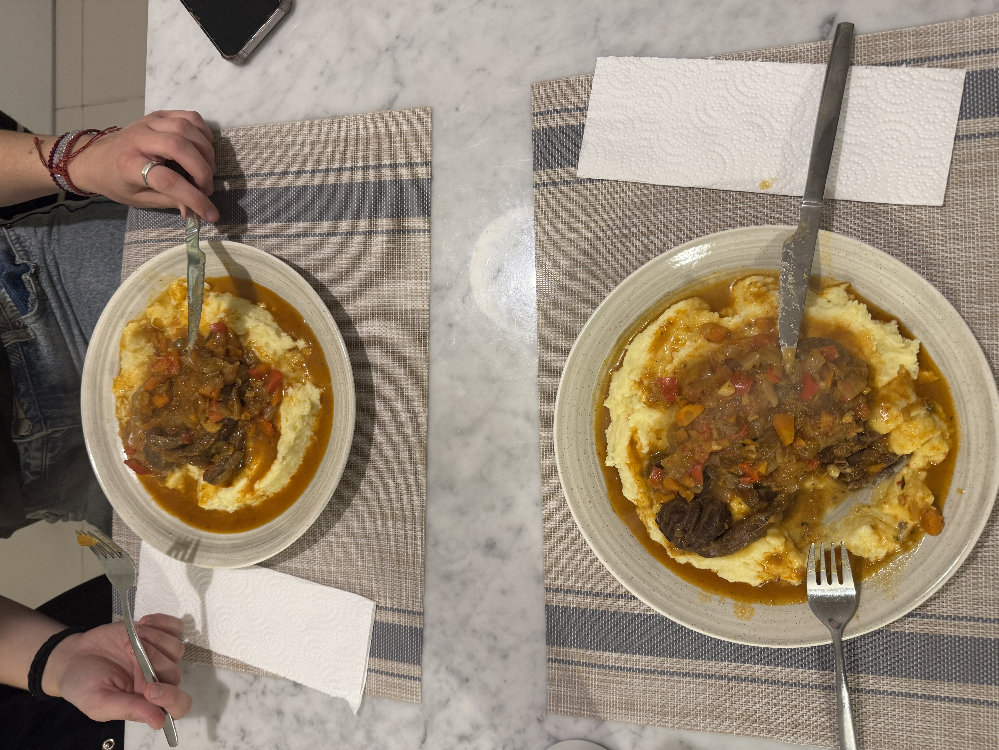

Salado
Recetas que te salvan almuerzos y cenas.
Tartas
Tarta de zucchini
Ingredientes
- 150 g de harina
- 4 cucharadas de aceite
- 1 pizca de sal
- 80 ml de agua caliente
- 4 zapallitos medianos
- 300 ml de leche
- 3 cucharadas colmadas de almidón de maíz
- 3 huevos
- ½ cebolla dorada
- Sal y pimienta
- Queso, cantidad necesaria
Procedimiento
- Para la masa, mezclar la harina, el aceite, la sal y el agua caliente.
- Amasar hasta obtener una masa homogénea y dejar reposar durante 15 minutos.
- Rallar los zapallitos y quitarles bien el agua, hasta que queden secos.
- Mezclar los huevos con la leche.
- Agregar los zapallitos a la mezcla líquida.
- Incorporar el almidón de maíz, la cebolla, la sal y la pimienta. Mezclar bien.
- Estirar la masa y colocarla en un molde de 24 cm de diámetro.
- Cocinar la masa durante aproximadamente 15 minutos, hasta que esté ligeramente dorada.
- Agregar el relleno sobre la masa precocida.
- Colocar algunos trozos de queso por encima.
- Hornear hasta que el relleno cuaje bien y la masa esté completamente cocida.
Carnes
Bondiola al horno

Ingredientes
- 1 kg de bondiola
- 3 cebollas blancas
- 2 dientes de ajo
- 3 cucharadas de mostaza de Dijon
- 2 cucharadas de miel
- Caldo de verduras, cantidad necesaria para cubrir la bondiola
- Sal y pimienta
Procedimiento
- Salpimentar la bondiola y sellarla.
- Cortar las cebollas en pluma y picar el ajo. Cocinarlos en la misma olla donde se selló la bondiola.
- Disolver el caldo de verduras en agua.
- Agregar la mostaza y la miel a la bondiola y cubrirla bien.
- Colocar la bondiola en la misma olla donde están las cebollas y el ajo.
- Agregar el caldo hasta cubrir la bondiola.
- Cocinar durante aproximadamente 2 horas, hasta que la bondiola esté bien tierna y la salsa quede cremosa.